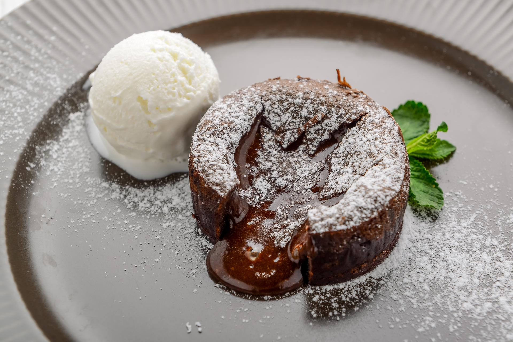

Шоколадный фондан  Ингредиенты: Темный шоколад - 200 г Сливочное масло - 100 г Яйца - 4 шт Сахар - 100 г Мука - 50 г Приготовление: Растопите шоколад с маслом Взбейте яйца с сахаром Смешайте все ингредиенты Выпекайте 8-10 минут при 200°C На главную